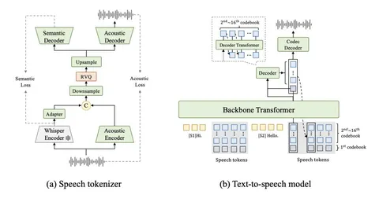
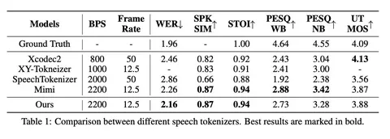
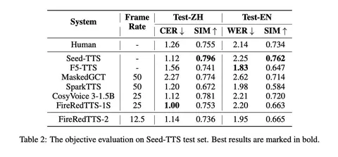
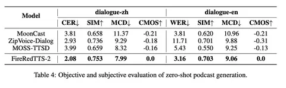

FireRedTTS-2: Towards Long Conversational Speech Generation for Podcast and Chatbot
Сегодня разберём статью, авторы которой пытаются решить задачу multi-speaker-генерации длинных диалогов, например для подкастов и чат-ботов.
Во-первых, в работе предлагают новый стриминговый speech tokenizer с частотой 12,5 Hz (12,5 токена/сек), чтобы тянуть длинные последовательности. Обычно используют токенизаторы с частотой около 25 Hz, а здесь её снижают — как раз чтобы упростить работу с длинными диалогами.
Во-вторых, для моделирования multi-layer speech-токенов используют подход dual-transformer: большой decoder-only-трансформер предсказывает токены первого уровня, а маленький трансформер быстро достраивает остальные.
Архитектура
В speech tokenizer объединяют два источника информации: акустику и семантику из Whisper (его энкодер заморожен). Их приводят к одному пространству и кодируют в RVQ-токены, чтобы в каждом была и семантическая, и акустическая информация.
Поверх этого работает TTS-модель: на вход подаются speaker + text + speech tokens. Трансформер сначала предсказывает токен первого уровня, а затем маленький декодер достраивает остальные уровни. После этого полный набор RVQ-токенов превращается обратно в финальный speech.
Как обучают speech tokenizer
Обучение проходит в две стадии. На претрейне используют reconstruction loss и дополнительные лоссы для RVQ и семантики, а также perceptual loss через WavLM для сравнения фичей реконструкции и оригинала.
На этапе посттрейна семантический декодер убирают, акустический заменяют на стриминговую версию (24 kHz), и дообучают уже с reconstruction + GAN loss на более чистых данных.
По WER токенизатор показывает лучший результат среди моделей с таким низким frame rate, хотя по MOS уступает некоторым решениям вроде XCodec2.
Сценарии использования
1) Voice cloning
Модель может воспроизводить голос по промпту. Разборчивость речи получается хорошей, но вот похожесть на оригинальный голос — хуже, чем у лидеров. Авторы говорят, что voice cloning — не главный фокус работы.
2) Диалоговый чат с эмоциями
Для этого сценария собрали 15 часов эмоциональной речи, записанных одной женщиной (6 эмоций), и дообучили модель так, чтобы она могла отвечать с нужной интонацией. Эмоции затем проверяли вручную — точность получилась высокой. Правда, остаётся вопрос, насколько хорошо такая модель умеет говорить нейтрально.
3) Генерация подкастов
Авторы сделали набор английских и китайских подкастовых разговоров, которые показывают, что модель может генерировать диалоги длиной до трёх минут и поддерживать несколько говорящих. Сравнивают по MOS и другим метрикам, и отдельно делают side-by-side с реальными записями. Говорят, что примерно в 28% случаев их результат можно перепутать с настоящими диалогами.
Максим Борисов❣ Специально для Speech Info
Сегодня разберём статью, авторы которой пытаются решить задачу multi-speaker-генерации длинных диалогов, например для подкастов и чат-ботов.
Во-первых, в работе предлагают новый стриминговый speech tokenizer с частотой 12,5 Hz (12,5 токена/сек), чтобы тянуть длинные последовательности. Обычно используют токенизаторы с частотой около 25 Hz, а здесь её снижают — как раз чтобы упростить работу с длинными диалогами.
Во-вторых, для моделирования multi-layer speech-токенов используют подход dual-transformer: большой decoder-only-трансформер предсказывает токены первого уровня, а маленький трансформер быстро достраивает остальные.
Архитектура
В speech tokenizer объединяют два источника информации: акустику и семантику из Whisper (его энкодер заморожен). Их приводят к одному пространству и кодируют в RVQ-токены, чтобы в каждом была и семантическая, и акустическая информация.
Поверх этого работает TTS-модель: на вход подаются speaker + text + speech tokens. Трансформер сначала предсказывает токен первого уровня, а затем маленький декодер достраивает остальные уровни. После этого полный набор RVQ-токенов превращается обратно в финальный speech.
Как обучают speech tokenizer
Обучение проходит в две стадии. На претрейне используют reconstruction loss и дополнительные лоссы для RVQ и семантики, а также perceptual loss через WavLM для сравнения фичей реконструкции и оригинала.
На этапе посттрейна семантический декодер убирают, акустический заменяют на стриминговую версию (24 kHz), и дообучают уже с reconstruction + GAN loss на более чистых данных.
По WER токенизатор показывает лучший результат среди моделей с таким низким frame rate, хотя по MOS уступает некоторым решениям вроде XCodec2.
Сценарии использования
1) Voice cloning
Модель может воспроизводить голос по промпту. Разборчивость речи получается хорошей, но вот похожесть на оригинальный голос — хуже, чем у лидеров. Авторы говорят, что voice cloning — не главный фокус работы.
2) Диалоговый чат с эмоциями
Для этого сценария собрали 15 часов эмоциональной речи, записанных одной женщиной (6 эмоций), и дообучили модель так, чтобы она могла отвечать с нужной интонацией. Эмоции затем проверяли вручную — точность получилась высокой. Правда, остаётся вопрос, насколько хорошо такая модель умеет говорить нейтрально.
3) Генерация подкастов
Авторы сделали набор английских и китайских подкастовых разговоров, которые показывают, что модель может генерировать диалоги длиной до трёх минут и поддерживать несколько говорящих. Сравнивают по MOS и другим метрикам, и отдельно делают side-by-side с реальными записями. Говорят, что примерно в 28% случаев их результат можно перепутать с настоящими диалогами.
Максим Борисов

265 просмотров · 20 реакций
Открыть в Telegram · Открыть пост на сайте